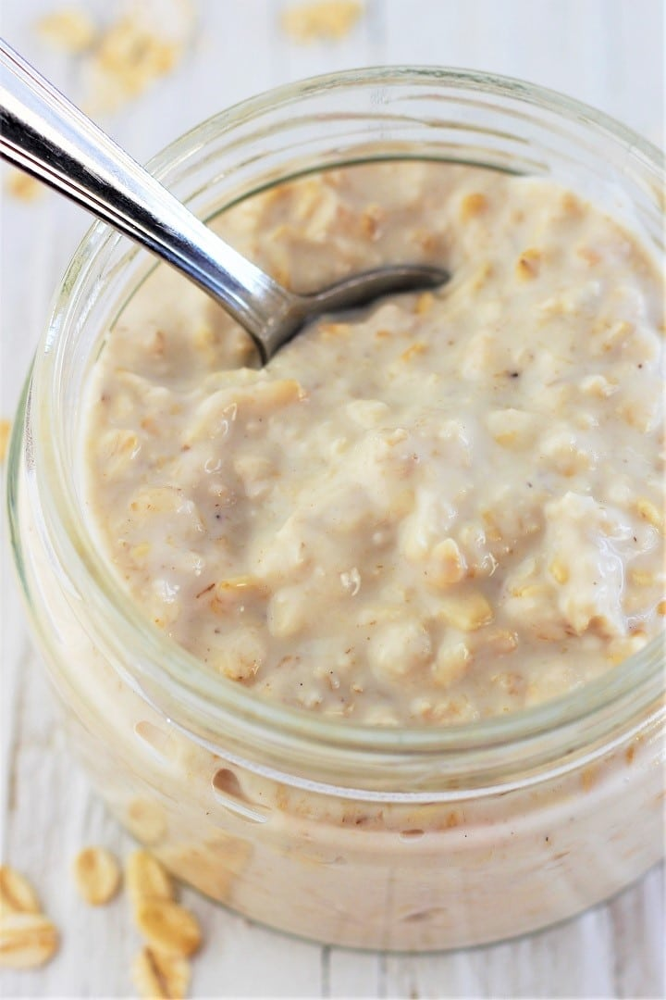

Overnight Oats Recipe

Oats you glad that I have the Recipe
Ingredients You Need:
- 1 Strawberry
- 0.5 Banana
- 5 Blueberry
- 0.5 Yogurt
- 300ml Milk
- Jar
Recipe to Follow
- Wash your strawberry and blueberry
- Cut the Strawberries<
- Peel the banana
- Put everything in the Jar and Mix it!!!